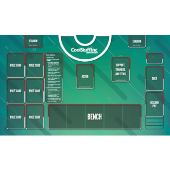

This page will teach you the basic frame from the type of card to the steps to play
Click on the underlined text to learn more on the topic.
6 steps to play
Draw
Evolve
Trainers
Attach energy
Attack
Pass
At the start of every turn you draw a card
Evolve any pokemon if you can.
Use any items or Supporters ypu have
Attach an energy or specal energy one per turn
Attack or use any pokemon abilitys before ending your turn
Pass for turn ending and letting your opponet take there turn
The play mat
There is a play mat with your deck, discard pile, prize cards and, actice/benched pokemon
begening of the game you draw 7 cards if you do not have a basic you show your hard to yopu oponunt they draw one extra card and redraw once both players have a basic pokemon in your active spot you may dar your six prize cards, evry time you kill a pokmon you pulll a prize card. when you hvae pulled all 6 or killed or opponets active pokemon with nun on the bench you win.